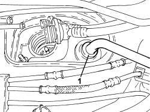
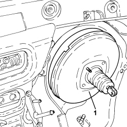

3330D18 BRAKE SERVO R R FOR RIGHT HAND DRRIVE VERSIONS
- Path
- Procedures > 33 BRAKES > 3330 HYDRAULIC BRAKING SYSTEM > 3330D BRAKE VACUUM SYSTEM > 3330D18 BRAKE SERVO R R FOR RIGHT HAND DRRIVE VERSIONS
- Kind
- repair procedure (removal / refitting; the operation number is the code)
- Applies to
- engines: 2.2 JTS; all production periods
- Interactive page
- https://sloeber94.github.io/elrnDB-aBrrSpdr/en/#/946004013
Applies to: engines: 2.2 JTS; all production periods
 Removing
Removing
 Refitting
RefittingOp. 0010T84 COOLANT FOR AIR CONDITIONING SYSTEM - DEHYDRATE AND REPRESSURIZE
Op. 3330C12 MASTER CYLINDER (PUMP) - R.R. FOR RIGHT HAND DRIVE VERSIONS
Op. 7210E36 R.R. FRONT SIDE DOOR
Op. 5010C30 CENTRAL AIR VENT IN DASHBOARD - R.R.
Op. 5010C12 WINDSCREEN DEMISTER DIFFUSER - R+R
Op. 5010D56 SOLAR SENSOR - R.R FOLLOWING ELECTRICAL SYSTEM CHECK
Op. 7040A44 LEFT DASHBOARD SIDE TRIM - R.R.
Op. 5580C18 AIR BAG MODULE - R+R
Op. 4110A10 STEERING WHEEL - R+R FOR REPLACEMENT OR CHECKS
Op. 7040A26 STEERING COLUMN TRIM - R+R
Op. 5560B10 CONTROL PANEL - R+R
Op. 7040A45 RIGHT DASHBOARD SIDE TRIM - R.R.
Op. 7040A31 DASHBOARD COMPARTMENT ASSEMBLY - R.R.
Op. 5580C22 AIR BAG MODULE - PASSENGER SIDE - R.R
Op. 7040A58 INSTRUMENT PANEL MOULDING - R+R
Op. 5580C26 PASSENGER AIR BAG DISABLING KEY LOCK BARREL/SWITCH - R.R.
Op. 5010C55 LOWER AIR DIFFUSER (ONE) LH OR RH - R.R
Op. 7040A65 CONSOLE SIDE CLOSING (ONE) - R.R.
Op. 7040L20 TUNNEL COVER - R.R
Op. 5580C23 DRIVE SIDE KNEE PROTECTION AIR BAG MODULE R. R.
Op. 7040A56 SWITCH UNIT IN DASHBOARD - R.R.
Op. 5040D18 AIR CONDITIONING CONTROL UNIT - R.R.
Op. 7040A10 DASHBOARD TRIM - R+R
Op. 5050B34 WINDSCREEN WIPER ARM/S COMPLETE WITH BLADE - R+R
Op. 7025A64 ENGINE COMPARTMENT GASKET - R.R.
Op. 7210E22 R.R. WINDSCREEN BASE TRIM
Op. 5050B38 WINDSCREEN WIPER ASSEMBLY - R+R OR REPAIR
Op. 7040A89 REINFORCEMENT BRACKET BETWEEN DASHBOARD SUPPORTING CROSSMEMER AND BODYSHELL - R.R.
Op. 1820B21 MASTER CYLINDER (PUMP) - R R FOR RIGHT HAND DRIVE VERSIONS
1. Disconnect the single-acting valve from the brake servo.

Applies to: engines: 2.2 JTS; all production periods
1. Woring from inside the vehicle, remove the brake servo.

Applies to: engines: 2.2 JTS; all production periods
Refitting
Removing- Place the brake servo in position and connect the single-acting valve.
Op. 1820B21 MASTER CYLINDER (PUMP) - R R FOR RIGHT HAND DRIVE VERSIONS
Op. 7040A89 REINFORCEMENT BRACKET BETWEEN DASHBOARD SUPPORTING CROSSMEMER AND BODYSHELL - R.R.
Op. 5050B38 WINDSCREEN WIPER ASSEMBLY - R+R OR REPAIR
Op. 7210E22 R.R. WINDSCREEN BASE TRIM
Op. 7025A64 ENGINE COMPARTMENT GASKET - R.R.
Op. 5050B34 WINDSCREEN WIPER ARM/S COMPLETE WITH BLADE - R+R
Op. 7040A10 DASHBOARD TRIM - R+R
Op. 5040D18 AIR CONDITIONING CONTROL UNIT - R.R.
Op. 7040A56 SWITCH UNIT IN DASHBOARD - R.R.
Op. 5580C23 DRIVE SIDE KNEE PROTECTION AIR BAG MODULE R. R.
Op. 7040L20 TUNNEL COVER - R.R
Op. 7040A65 CONSOLE SIDE CLOSING (ONE) - R.R.
Op. 5010C55 LOWER AIR DIFFUSER (ONE) LH OR RH - R.R
Op. 5580C26 PASSENGER AIR BAG DISABLING KEY LOCK BARREL/SWITCH - R.R.
Op. 7040A58 INSTRUMENT PANEL MOULDING - R+R
Op. 5580C22 AIR BAG MODULE - PASSENGER SIDE - R.R
Op. 7040A31 DASHBOARD COMPARTMENT ASSEMBLY - R.R.
Op. 7040A45 RIGHT DASHBOARD SIDE TRIM - R.R.
Op. 5560B10 CONTROL PANEL - R+R
Op. 7040A26 STEERING COLUMN TRIM - R+R
Op. 4110A10 STEERING WHEEL - R+R FOR REPLACEMENT OR CHECKS
Op. 5580C18 AIR BAG MODULE - R+R
Op. 7040A44 LEFT DASHBOARD SIDE TRIM - R.R.
Op. 5010D56 SOLAR SENSOR - R.R FOLLOWING ELECTRICAL SYSTEM CHECK
Op. 5010C12 WINDSCREEN DEMISTER DIFFUSER - R+R
Op. 5010C30 CENTRAL AIR VENT IN DASHBOARD - R.R.
Op. 7210E36 R.R. FRONT SIDE DOOR
Op. 3330C12 MASTER CYLINDER (PUMP) - R.R. FOR RIGHT HAND DRIVE VERSIONS
Op. 0010T84 COOLANT FOR AIR CONDITIONING SYSTEM - DEHYDRATE AND REPRESSURIZE
Op. 0010T64 BRAKE AND/OR CLUTCH FLUID CHECK LEVEL AND TOP UP AS NECESSARY
Topics linked from this page (33)
- 0010T64 BRAKE AND/OR CLUTCH FLUID CHECK LEVEL AND TOP UP AS NECESSARY
- 0010T65 HYDRAULIC BRAKE SYSTEM - BLEED AIR
- 0010T84 COOLANT FOR AIR CONDITIONING SYSTEM - DEHYDRATE AND REPRESSURIZE
- 1820B21 MASTER CYLINDER (PUMP) - R R FOR RIGHT HAND DRIVE VERSIONS
- 3330B08 PEDAL MOUNT ASSEMBLY - R R AND OVERHAUL WITH FACIA TRIM SUPPORT BEAM REMOVED FOR RIGHT-HAND DRIVE VERSIONS
- 3330C12 MASTER CYLINDER (PUMP) - R.R. FOR RIGHT HAND DRIVE VERSIONS
- 4110A10 STEERING WHEEL - R+R FOR REPLACEMENT OR CHECKS
- 4110A29 MOUNT WITH STEERING SHAFTS - R R - INCLUDES STEERING WHEEL R R - FOR RIGHT-HAND SIDE VERSIONS
- 5010C12 WINDSCREEN DEMISTER DIFFUSER - R+R
- 5010C30 CENTRAL AIR VENT IN DASHBOARD - R.R.
- 5010C55 LOWER AIR DIFFUSER (ONE) LH OR RH - R.R
- 5010D56 SOLAR SENSOR - R.R FOLLOWING ELECTRICAL SYSTEM CHECK
- 5040D18 AIR CONDITIONING CONTROL UNIT - R.R.
- 5050B34 WINDSCREEN WIPER ARM/S COMPLETE WITH BLADE - R+R
- 5050B38 WINDSCREEN WIPER ASSEMBLY - R+R OR REPAIR
- 5560B10 CONTROL PANEL - R+R
- 5580C18 AIR BAG MODULE - R+R
- 5580C22 AIR BAG MODULE - PASSENGER SIDE - R.R
- 5580C23 DRIVE SIDE KNEE PROTECTION AIR BAG MODULE R. R.
- 5580C26 PASSENGER AIR BAG DISABLING KEY LOCK BARREL/SWITCH - R.R.
- 7025A64 ENGINE COMPARTMENT GASKET - R.R.
- 7040A10 DASHBOARD TRIM - R+R
- 7040A26 STEERING COLUMN TRIM - R+R
- 7040A31 DASHBOARD COMPARTMENT ASSEMBLY - R.R.
- 7040A44 LEFT DASHBOARD SIDE TRIM - R.R.
- 7040A45 RIGHT DASHBOARD SIDE TRIM - R.R.
- 7040A56 SWITCH UNIT IN DASHBOARD - R.R.
- 7040A58 INSTRUMENT PANEL MOULDING - R+R
- 7040A65 CONSOLE SIDE CLOSING (ONE) - R.R.
- 7040A89 REINFORCEMENT BRACKET BETWEEN DASHBOARD SUPPORTING CROSSMEMER AND BODYSHELL - R.R.
- 7040L20 TUNNEL COVER - R.R
- 7210E22 R.R. WINDSCREEN BASE TRIM
- 7210E36 R.R. FRONT SIDE DOOR